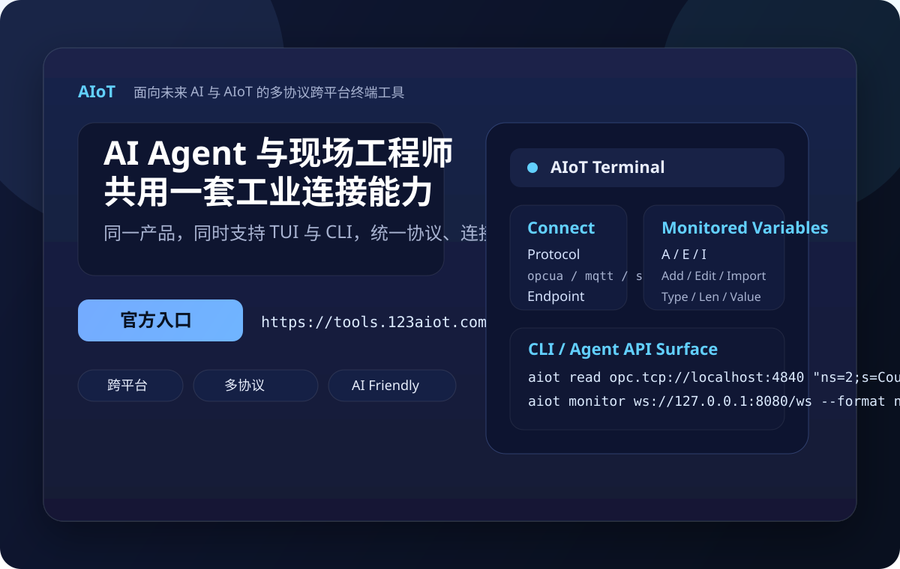
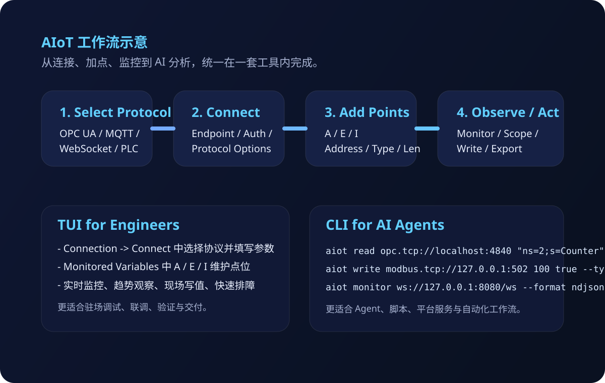

面向未来 AI 与 AIoT 的跨平台多协议工具
让 AI Agent 与 现场实施工程师
使用同一套工业连接能力
aiot 是一款跨平台、多协议、双交互形态的软件产品。它既提供面向人的 TUI 终端界面， 也提供面向自动化与大模型编排的 CLI 命令行接口，帮助企业把工业数据接入未来 AI 工作流。
Windows / Linux / macOS
OPC UA / MQTT / WebSocket
Modbus / S7 / Melsec / Omron / Delta / Xinje
AI Agent Friendly
Windows 下载
已提供可直接下载的 Windows 单文件主程序压缩包，内含
AIoT.exe 和运行所需 plugins 目录，下载解压后即可使用。
下载 Windows 版本（ZIP）
文件：
docs/downloads/aiot-win-x64.zip

新版 AIoT 品牌主视觉：统一展示多协议、TUI、CLI、AI Agent 与现场工程师协同能力。为什么 aiot 适合未来 AI 与 AIoT
传统工业工具往往不是为 AI 调用设计的：要么只有桌面 GUI，不利于自动化；要么只有脚本接口，不利于现场排障。
aiot 通过统一协议抽象、统一终端体验、统一命令接口，把人和 AI 的使用方式对齐到一套产品里。
官方产品入口：
https://tools.123aiot.com
Windows 直接下载：
downloads/aiot-win-x64.zip
双模式
TUI + CLI 同时具备，兼顾人工调试与机器调用。
跨平台
可发布为 Windows、Linux、macOS 可执行文件，便于边缘侧与运维侧落地。
多协议
覆盖工业现场主流协议与消息协议，降低接入碎片化成本。
AI 友好
CLI 支持结构化输出，适合 Agent、脚本、CI、平台服务直接调用。
一套产品，两种工作方式
现场工程师需要“看得见、改得动、排得快”；AI Agent 需要“可调用、可解析、可编排”。aiot 同时满足这两点。
TUI：面向现场实施与调试
通过终端图形界面完成连接、选协议、增加点位、监控数值、写值与诊断。
- Connect 对话框内选择协议并配置连接参数
- 在 Monitored Variables 中维护点位 A / E / I
- 适合工程师驻场调试、巡检、联调、故障复现
CLI：面向 AI Agent 与自动化
通过统一的 `aiot` 命令完成读取、写入、监控、浏览，便于脚本和平台集成。
- 支持 `read / write / monitor / browse`
- 适合 AI Agent、批处理、CI、远程运维
- 可输出 text / json / ndjson
统一协议抽象
无论是人还是 AI，看到的都是一致的协议名称、地址语义、连接参数与数据类型能力。
- 减少培训成本
- 减少脚本与人工流程割裂
- 有利于未来增加更多协议插件
多协议能力矩阵
aiot 不只是一款 OPC UA 工具，而是一个面向 AIoT 场景的多协议接入终端。
| 协议 | 典型用途 | CLI 协议键 | 能力概览 |
|---|---|---|---|
| OPC UA | 标准工业互联、浏览地址空间、订阅变量 | opcua |
读 / 写 / 浏览 / 原生订阅 |
| MQTT | 边缘消息、轻量遥测、AI 平台事件接入 | mqtt |
读缓存 / 发布 / 监控 Topic 流 |
| WebSocket | Web 实时通道、边缘服务对接 | websocket |
读缓存 / 文本写入 / 监控消息流 |
| Modbus TCP / RTU | PLC / 现场设备寄存器与线圈访问 | modbus.tcp / modbus.rtu |
类型化读写 / 轮询监控 |
| Siemens S7 | 西门子 PLC 现场调试 | siemens.s7 |
类型化读写 / 轮询监控 |
| Melsec / Omron / Delta / Xinje | 多品牌 PLC 场景统一接入 | melsec / omron / delta / xinje |
类型化读写 / 轮询监控 |
直接用 aiot 命令行，不依赖源码项目路径
面向部署与交付时，推荐将 aiot 发布为可执行文件后直接使用，例如 Windows 下的
aiot.exe，
Linux/macOS 下的 aiot。以下示例全部采用最终用户视角的直接命令形式。
OPC UA 读取
aiot read opc.tcp://localhost:4840 "ns=2;s=Counter" --format json
Modbus TCP 写入
aiot write modbus.tcp://127.0.0.1:502 100 true --protocol modbus.tcp --type bool --station 1 --format json
Siemens S7 读取
aiot read s7://192.168.0.10:102?plc=s1200&rack=0&slot=1 DB1.0 --protocol siemens.s7 --type int --format json
MQTT 发布
aiot write mqtt://127.0.0.1:1883 "" 23.5 --protocol mqtt --topic sensors/temp --qos 1 --retain --format json
WebSocket 监控
aiot monitor ws://127.0.0.1:8080/ws --protocol websocket --ws-subprotocol telemetry --ws-header "X-Site:line1;X-Role:agent" --ws-address "$last" --count 3 --format ndjson
适合 AI Agent 的原因
1. 命令结构稳定 2. 协议参数显式 3. 支持 JSON / NDJSON 4. 易于被工作流、脚本、Agent 平台直接调用
典型使用场景
aiot 的价值不只是“能连设备”，而是把工业连接能力变成能同时被人和 AI 消费的标准入口。
AI Agent 调用工业现场数据
在边缘网关、平台服务、Copilot、Agent 工作流中直接调用 `aiot`，获取设备数据、写入控制指令、做巡检采集或状态分析。
- 适合数据采集、告警核验、自动诊断、状态快照
- 支持 JSON / NDJSON，便于模型和程序解析
现场工程师快速实施与排障
工程师使用 TUI 直接连接设备，选择协议、填写连接参数、增加监控点位、在线写值，快速验证现场问题。
- 适合调试、联调、试运行、故障复现
- 不依赖笨重桌面软件，终端环境即可工作
AIoT 品牌版主界面示意
连接对话框内选择协议，Monitored Variables 中执行 A / E / I 点位维护，符合最新版产品定位。AIoT 工作流示意

用新的 SVG 示意图替换旧截图，统一展示协议选择、连接、点位维护与 AI 自动化调用链路。一句话总结
aiot 是一款真正面向未来工业智能场景的软件产品：它把多协议接入、跨平台终端能力、工程实施体验与 AI Agent 自动化调用统一到了同一套工具中。
多协议
跨平台
TUI + CLI
AI Agent 可调用
现场工程师可直接使用